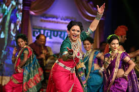

Popular Dance Forms
Madhya Pradesh boasts a variety of traditional dance forms that reflect its vibrant cultural heritage. Here are some of the prominent dance styles from the region.

Exploring the Rich Dance Traditions of Madhya Pradesh
Madhya Pradesh boasts a variety of traditional dance forms that reflect its vibrant cultural heritage. Here are some of the prominent dance styles from the region.